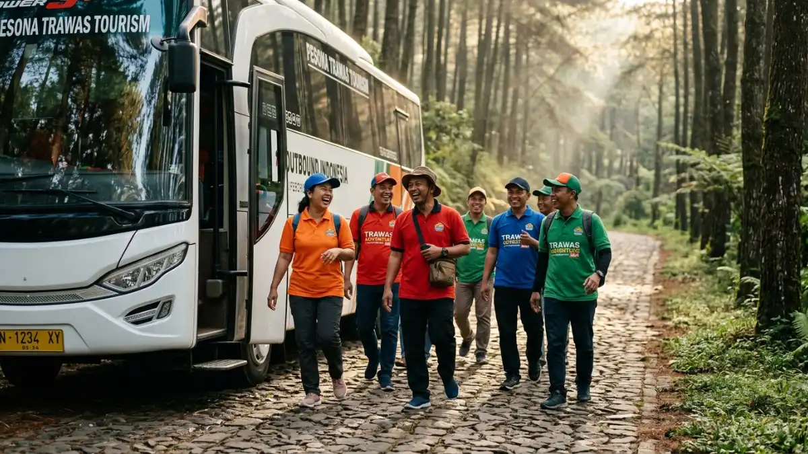

Kegiatan kelompok di alam terbuka menawarkan berbagai variasi.
(Ilustrasi)
Kegiatan kelompok di alam terbuka menawarkan berbagai variasi.
(Ilustrasi)
Sewa bus pariwisata Trawas outbound adalah layanan penyewaan armada bus untuk mengantar rombongan menuju kawasan outbound di Trawas, Mojokerto. Layanan ini mencakup pemilihan tipe bus, rute, dan penyedia yang sesuai kebutuhan rombongan pada 2026.
DAFTAR ISI
- 1. Apa Itu Sewa Bus Pariwisata untuk Outbound di Trawas?
- 2. Untuk Siapa Layanan Sewa Bus Pariwisata Trawas Outbound Ini Cocok?
- 3. Kapan Waktu Terbaik Menyewa Bus Pariwisata untuk Outbound di Trawas?
- 4. Mengapa Memilih Bus Pariwisata Dibanding Kendaraan Lain untuk Outbound Trawas?
- 5. Bagaimana Cara Memilih Bus Pariwisata yang Tepat untuk Outbound di Trawas?
- 6. Apa Saja Faktor yang Memengaruhi Biaya Sewa Bus Pariwisata untuk Trawas?
- 7. Apa Saja Kesalahan Umum saat Menyewa Bus Pariwisata untuk Outbound di Trawas?
- 8. Bagaimana Perbandingan Bus Pariwisata Ukuran Besar dan Sedang untuk Rute Trawas?
- Kesimpulan
- FAQ
1. Apa Itu Sewa Bus Pariwisata untuk Outbound di Trawas?
Sewa bus pariwisata untuk outbound di Trawas adalah layanan transportasi rombongan menuju kawasan wisata dan venue pelatihan di Trawas, Mojokerto, yang dikenal memiliki udara sejuk dan kontur perbukitan.
Kawasan Trawas terletak di lereng Gunung Penanggungan dan Welirang, dengan ketinggian yang membuat suhu udaranya lebih sejuk dibanding dataran rendah Mojokerto pada umumnya.
Kondisi geografis ini membuat banyak venue outbound, resor keluarga, dan pusat pelatihan kepemimpinan berdiri di sepanjang jalur menuju kawasan tersebut.
Bagi perusahaan, sekolah, atau komunitas yang mengadakan kegiatan outbound, transportasi rombongan menjadi elemen penting dalam kelancaran acara.
Bus pariwisata dipilih karena mampu mengangkut peserta dalam jumlah besar sekaligus, sehingga lebih efisien dibanding menggunakan kendaraan pribadi yang terpisah-pisah.
Layanan sewa bus pariwisata untuk rute ini umumnya mencakup pengemudi berpengalaman, bahan bakar, dan terkadang fasilitas tambahan seperti pendingin udara, sistem audio, serta kursi yang dapat direbahkan untuk kenyamanan perjalanan menuju kawasan pegunungan.
2. Untuk Siapa Layanan Sewa Bus Pariwisata Trawas Outbound Ini Cocok?
Layanan ini cocok untuk perusahaan, sekolah, organisasi, dan keluarga besar yang membutuhkan transportasi rombongan menuju venue outbound di Trawas secara aman dan terkoordinasi.
Beberapa kelompok pengguna yang umum memanfaatkan layanan ini antara lain:
- Divisi HR atau manajemen perusahaan yang mengadakan team building dan pelatihan kepemimpinan.
- Sekolah dan kampus yang menyelenggarakan study tour atau kegiatan pramuka.
- Komunitas hobi atau keagamaan yang mengadakan retret dan gathering tahunan.
- Event organizer yang menangani acara outbound untuk klien korporat.
- Keluarga besar yang merayakan acara reuni atau liburan bersama di kawasan Trawas.
Setiap kelompok memiliki kebutuhan berbeda, misalnya sekolah cenderung membutuhkan bus dengan kapasitas besar dan harga terjangkau, sementara perusahaan sering memprioritaskan kenyamanan dan fasilitas tambahan di dalam bus.
3. Kapan Waktu Terbaik Menyewa Bus Pariwisata untuk Outbound di Trawas?
Waktu terbaik menyewa bus pariwisata untuk outbound di Trawas adalah pada hari kerja di luar musim liburan, karena ketersediaan armada lebih banyak dan harga cenderung lebih stabil.
Pada akhir pekan, musim liburan sekolah, dan momen libur panjang nasional, permintaan bus pariwisata ke kawasan wisata dataran tinggi seperti Trawas biasanya meningkat.
Kondisi ini membuat ketersediaan armada favorit menjadi terbatas dan harga sewa cenderung lebih tinggi dibanding hari biasa.
Untuk kegiatan outbound perusahaan atau sekolah yang jadwalnya fleksibel, memesan bus jauh-jauh hari, idealnya dua hingga empat minggu sebelum acara, membantu memastikan armada yang dipilih masih tersedia dan sopir dapat mempersiapkan rute dengan baik.
Faktor cuaca juga perlu dipertimbangkan. Kawasan pegunungan seperti Trawas berpotensi mengalami kabut atau hujan pada musim tertentu, sehingga jadwal keberangkatan pagi hari umumnya lebih disarankan agar perjalanan tidak terganggu kondisi jalan yang licin di sore atau malam hari.
4. Mengapa Memilih Bus Pariwisata Dibanding Kendaraan Lain untuk Outbound Trawas?
Bus pariwisata dipilih untuk outbound Trawas karena mampu mengangkut peserta dalam jumlah besar sekaligus, menjaga rombongan tetap kompak, dan lebih efisien dari segi biaya per orang dibanding kendaraan kecil.
Beberapa keunggulan menggunakan bus pariwisata dibanding alternatif lain:
- Rombongan tetap satu jalur perjalanan sehingga lebih mudah dikoordinasikan panitia.
- Biaya transportasi per peserta umumnya lebih hemat dibanding menyewa beberapa kendaraan kecil.
- Bus pariwisata modern biasanya dilengkapi fasilitas hiburan yang dapat mengisi waktu perjalanan menuju Trawas.
- Pengemudi bus pariwisata yang berpengalaman di jalur pegunungan dapat membaca kondisi jalan menanjak dengan lebih baik.
Meski demikian, untuk rombongan kecil di bawah sepuluh orang, kendaraan minibus atau elf bisa menjadi pilihan yang lebih efisien dibanding bus besar.

Peserta outbound turun bus pariwisata di Trawas. (Ilustrasi)5. Bagaimana Cara Memilih Bus Pariwisata yang Tepat untuk Outbound di Trawas?
Cara memilih bus pariwisata yang tepat untuk outbound di Trawas adalah menyesuaikan kapasitas bus dengan jumlah peserta, memastikan kondisi kendaraan laik jalan, dan memeriksa pengalaman sopir di medan pegunungan.
Beberapa langkah yang dapat dilakukan:
- Hitung jumlah peserta secara pasti agar kapasitas bus, misalnya seat 31, 35, atau 59, sesuai kebutuhan tanpa berlebihan.
- Periksa dokumen kelaikan kendaraan seperti STNK, uji KIR, dan asuransi penumpang sebelum menyepakati sewa.
- Tanyakan pengalaman sopir dalam melewati jalur menanjak dan berkelok menuju kawasan Trawas.
- Cek fasilitas dalam bus seperti pendingin udara, toilet, dan kondisi kursi, terutama untuk perjalanan yang cukup panjang.
- Bandingkan penawaran dari beberapa penyedia untuk melihat kewajaran harga dan kelengkapan layanan.
Kesalahan umum yang perlu dihindari adalah memilih bus hanya berdasarkan harga termurah tanpa memeriksa kondisi fisik kendaraan dan legalitasnya, karena hal ini dapat berisiko pada keselamatan rombongan selama perjalanan.
6. Apa Saja Faktor yang Memengaruhi Biaya Sewa Bus Pariwisata untuk Trawas?
Biaya sewa bus pariwisata untuk rute Trawas dipengaruhi oleh jarak tempuh dari kota asal, jenis dan kapasitas bus, durasi pemakaian, serta musim atau hari keberangkatan.
Beberapa komponen yang umumnya memengaruhi biaya:
- Jarak dan waktu tempuh dari kota keberangkatan menuju Trawas.
- Kapasitas dan tipe bus, karena bus besar dengan fasilitas lengkap biasanya memiliki tarif lebih tinggi.
- Durasi sewa, apakah hanya pulang pergi dalam sehari atau menginap beberapa hari.
- Musim keberangkatan, karena tarif pada akhir pekan atau libur panjang cenderung lebih tinggi dibanding hari biasa.
- Biaya tambahan seperti tol, parkir, dan uang makan sopir yang biasanya dibebankan terpisah dari tarif dasar sewa.
Karena variasi ini cukup besar, harga pasti sebaiknya dikonfirmasi langsung ke masing-masing penyedia jasa, dan panitia disarankan meminta rincian biaya secara tertulis agar tidak ada biaya tersembunyi di kemudian hari.
7. Apa Saja Kesalahan Umum saat Menyewa Bus Pariwisata untuk Outbound di Trawas?
Kesalahan umum saat menyewa bus pariwisata untuk outbound di Trawas meliputi memesan mendadak, tidak memeriksa kondisi kendaraan, dan mengabaikan kesesuaian akses jalan menuju venue.
Beberapa kesalahan yang sering terjadi:
- Memesan bus terlalu dekat dengan hari acara sehingga pilihan armada menjadi terbatas.
- Tidak mengonfirmasi apakah jalan menuju venue outbound dapat dilalui bus besar.
- Mengabaikan pemeriksaan surat-surat kendaraan dan riwayat perawatan bus.
- Tidak menyepakati secara tertulis rincian biaya, jadwal, dan tanggung jawab jika terjadi keterlambatan.
- Kurang berkoordinasi dengan pengelola venue mengenai titik penurunan dan penjemputan peserta.
Menghindari kesalahan ini dapat dilakukan dengan menyusun daftar periksa sebelum hari keberangkatan dan menjalin komunikasi aktif dengan penyedia bus maupun pengelola venue outbound.
8. Bagaimana Perbandingan Bus Pariwisata Ukuran Besar dan Sedang untuk Rute Trawas?
Bus ukuran besar cocok untuk rombongan di atas 40 peserta dengan jalur yang cukup lebar, sementara bus ukuran sedang lebih fleksibel untuk jalan menuju venue outbound yang lebih sempit dan berkelok di Trawas.
| Aspek | Bus Besar | Bus Sedang |
|---|---|---|
| Kapasitas | Umumnya 45 hingga 59 seat | Umumnya 25 hingga 35 seat |
| Kesesuaian jalur | Jalan lebar dan cukup landai | Jalan sempit dan berkelok |
| Efisiensi biaya per orang | Lebih hemat untuk rombongan besar | Lebih fleksibel untuk rombongan menengah |
| Manuver di venue | Membutuhkan area putar yang luas | Lebih mudah bermanuver di area terbatas |
Pemilihan ukuran bus sebaiknya juga mempertimbangkan lebar akses jalan menuju venue outbound yang dituju, karena sebagian venue di kawasan perbukitan Trawas memiliki jalan masuk yang tidak terlalu lebar.
Kesimpulan
Sewa bus pariwisata untuk outbound di Trawas sebaiknya direncanakan jauh hari dengan memperhatikan kapasitas peserta, kondisi jalan menuju venue, dan legalitas kendaraan.
Bandingkan beberapa penyedia, minta rincian biaya tertulis, dan pastikan sopir berpengalaman di medan pegunungan agar perjalanan rombongan aman dan lancar sepanjang 2026.